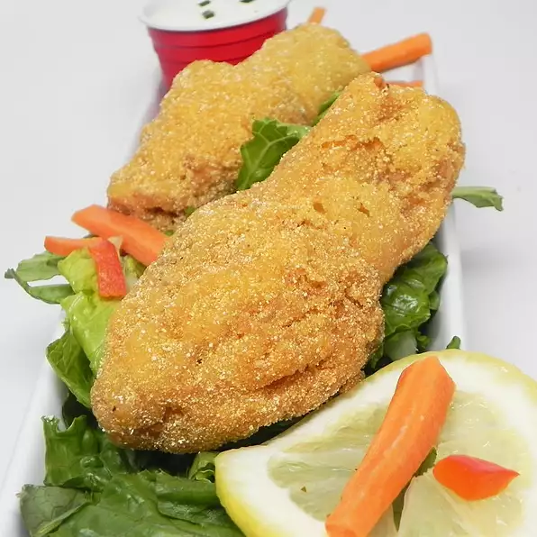

Simple Fried Morel Mushrooms

These mushrooms are a treasure of the woods hunted by many in the early spring here in Missouri. Simple and quick to fry and enjoy. Finding these can be very hard to find in the woods but well worth the work once you get a mess of them to eat.
Ingredients
- 1 pound fresh morel mushrooms - dirt gently brushed off and mushrooms halved lengthwise
- 1 cup all-purpose flour
- 1 cup vegetable shortening
- salt to taste
Steps
- Place halved morel mushrooms in a large bowl; cover with cold, lightly salted water. Refrigerate mushrooms for about 5 minutes to loosen any dirt; pour off salted water, rinse, and repeat twice more. Crevices of the mushrooms may harbor tiny stones or even insects. Thoroughly rinse mushrooms a final time and allow to drain on paper towels.
- Place flour in a shallow bowl.
- Heat vegetable shortening in a large skillet until very hot.
- Roll mushrooms in flour and tap off excess; gently lay mushrooms in the hot shortening.
- Pan-fry until golden brown and flour coating is crisp, 5 to 8 minutes, turning often. Drain morels on paper towels, salt to taste, and enjoy your treasures!
Go Back